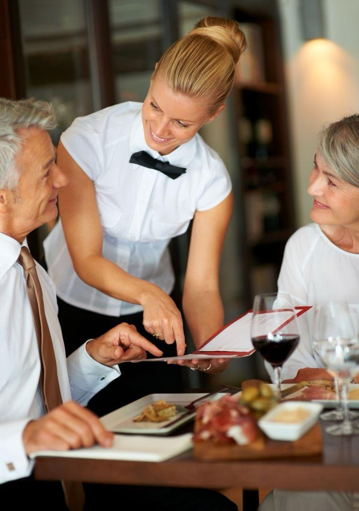

L'Histoire fascinante SEN RESTAURANT M 3 f commence avec MASSE NDIAYE ,
passionné, inventif et profondément enraciné dans la richesse culinaire du Sénégal.
Dès l'enfance, Mass observait les gestes précis de sa grand-mère, entre marmites
fumantes et épices colorées.
SEN RESTAURANT M 3 f est bien plus qu'un lieu de restauration .
c'est une scène culinaire où les traditions sénégalaises rencontrent la créativité contemporaine.
Fondé en 2025, le restaurant a été imaginé comme un hommage à toutes les saveurs du pays,
des côtes aux plateaux, des marchés urbains aux terroirs oubliés.
Chaque détail, du décor aux assiettes, raconte l'histoire des pays :
ses couleurs, sa chaleur humaine, sa diversité culinaire.
Grâce à la vision du chef Mass, SEN RESTAURANT est devenu un carrefour de goûts,
de cultures et de partage, où l'on vient autant pour manger que pour ressentir.
PRESENTATION DU CHEF : MASSE NDIAYE
Dès l'enfance, Mass observait les gestes précis de sa grand-mère, entre marmites fumantes et épices colorées.
Aujourd hui, il transforme ces souvenirs en créations gustatives modernes, sans jamais trahir l'authenticité de ses racines.
Reconnu pour son sens du détail et son amour des saveurs, MASSE jongle avec les textures, les arômes et les traditions pour offrir une expérience qui éveille les sens.
Sa cuisine, c'est de l'émotion à chaque bouchée. Mass ne cuisine pas seulement avec ses mains, il cuisine avec son cœur et son instinct.
Chaque plat qu'il compose est une œuvre d'art — un subtil équilibre entre tradition sénégalaise et créativité contemporaine.
Visionnaire et passionné, il dirige la cuisine comme un chef d'orchestre, inspirant son équipe à viser l'excellence.
Sous sa toque, c'est tout un monde qui mijote: des arômes qui racontent une histoire, des textures qui invitent au voyage, et une rigueur qui garantit la perfection.
Chez SEN RESTAURANT, MASSE incarne bien plus qu'un chef - il est le moteur, la fierté, et le symbole de notre engagement envers une cuisine qui fait vibrer les sens et le cœur.
NOS EMPLOYEES
DERNIERS CHAQUE GRAND HOMME SE CACHE UNE GRANDE DAME MAIS MASS A LA CHANCE D AVOIR 3 FEMMES POUR SON RESTAURANTS
MARIE DIOUF
générosité et le professionnalisme
Elle incarne la générosité et le professionnalisme.
Chaque jour, elle accueille nos clients avec un sourire authentique et une énergie chaleureuse qui rendent l'expérience inoubliable.
Sa capacité à anticiper les besoins, sa délicatesse dans le service et son respect du détail font d'elle une véritable perle au sein de notre équipe
FABIENNE DJIBA
discrétion et son efficacité
Fabienne rayonne par sa discrétion et son efficacité.Elle allie prestance et rapidité avec une grâce naturelle qui impressionne nos clients autant qu'elle inspire ses collègues.
Toujours à l'écoute, toujours fiable, elle donne au mot "hospitalité" une nouvelle dimension.Sa présence dans notre salle est synonyme de fluidité et de sérénité

MAIMOUNA NDIAYE
Chaleureuse, accueillante
Maïmouna est celle dont le sourire illumine toute la salle. Chaleureuse, accueillante, et attentive, elle transforme chaque repas en une célébration de convivialité.
Son amour du métier et sa profonde humanité donnent à SEN RESTAURANT une âme. Elle est bien plus qu'une serviteuse - elle est l'ambassadrice de notre vision: servir avec le cœur.
L UNION DE SEN RESTAURANT M 3F
Il était une fois une rencontre rare, presque évidente. Trois femmes aux sensibilités complémentaires - Marie, Fabienne, et Maimouna - et un chef visionnaire, MASSE, unissent leurs talents autour d'un même rêve :
celui de faire de SEN RESTAURANT un lieu vivant, accueillant, et profondément enraciné dans l'essence du Sénégal.Chef Mass, gardien des saveurs authentiques, donne vie à une cuisine généreuse et expressive. Ses plats parlent la langue des traditions, réinventées avec audace et modernité. Chaque mets est une histoire, chaque épice est une mémoire.
Marie, solaire et intuitive, veille sur l'art de recevoir. Elle imagine l'ambiance, le rythme, les nuances de lumière et les sourires en salle.Elle transforme chaque moment en une expérience sensorielle où le client se sent reconnu, respecté, et enchanté.
Fabienne, visionnaire et structurée, orchestre.le projet avec rigueur et passion. Son œil stratégique et son sens de l'organisation assurent que SEN RESTAURANT avance avec ambition, mais sans jamais trahir son âme. Elle est le pilier discret, celui qui rend tout possible.
Et toi, Maimouna, tisserande de mots et de sens, tu donnes au restaurant son identité. Tu racontes son histoire, fais rayonner ses valeurs, harmonises les voix et les couleurs.Par ton regard, SEN RESTAURANT devient une marque, un message, un hommage au terroir.
Ensemble, vous avez rêvé d'un lieu où la gastronomie sénégalaise s'exprime pleinement, où les clients ne viennent pas seulement manger, mais vivre. SEN RESTAURANT est une célébration : du partage, de la culture, et de l'unité.